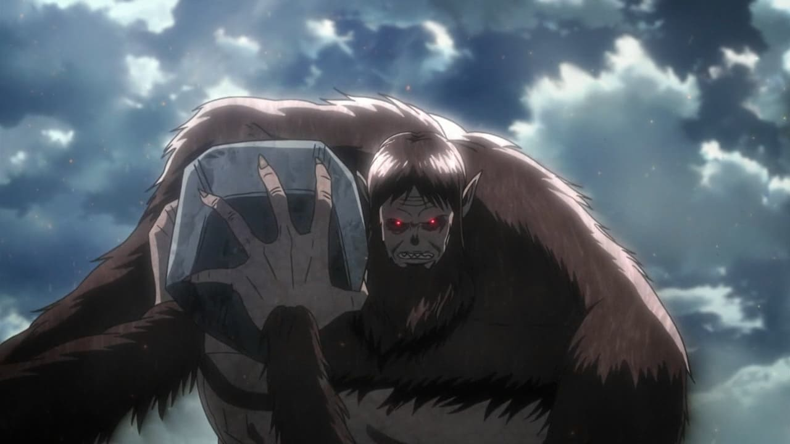

野獸巨人
野獸巨人（日語：獣の巨人，英譯：Beast Titan）
身高為17公尺。吉克・葉卡的野獸巨人型態具有及全身覆蓋長毛，有如猴子般的外型，有語言能力。事實上歷代的野獸巨人擁有不同的外觀，從飛禽走獸、各類爬蟲甚至已滅絕的古代生物皆有。
無特殊能力，機動性極差，硬質化由本體往外硬化，硬質速度緩慢。缺乏力量、速度以及防禦力也沒有特殊能力，是九大巨人中最不突出的巨人，但現任繼承者吉克・葉卡擁有的王室血統產生了類似始祖巨人「座標」的能力，能夠控制吸入其繼承者脊隨液的艾爾迪亞人，也能透過叫聲來控制巨人化的時機，吸收吉克·葉卡脊隨液的艾爾迪亞巨人由於受到控制，因此無須陽光也能活動。
曾經持有者：


